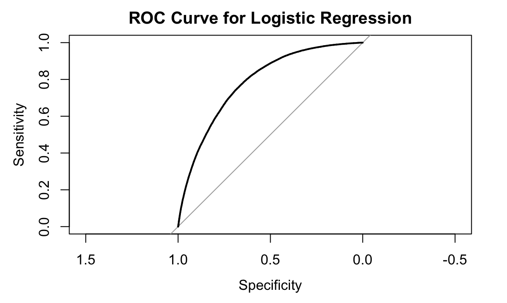
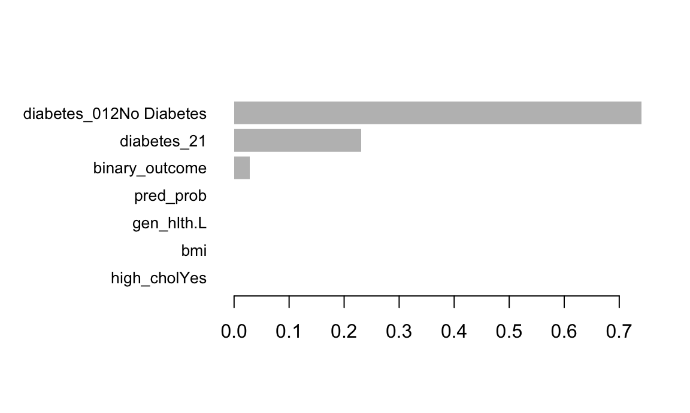

We fit a logistic regression model using health and lifestyle predictors such as blood pressure, cholesterol, BMI, smoking status, physical activity, age, and sex.
logit_model = glm(
diabetes_binary ~ high_bp + high_chol + bmi + smoker + phys_activity + age + sex,
data = diabetes_temp,
family = binomial(link = "logit")
)
summary(logit_model)##
## Call:
## glm(formula = diabetes_binary ~ high_bp + high_chol + bmi + smoker +
## phys_activity + age + sex, family = binomial(link = "logit"),
## data = diabetes_temp)
##
## Coefficients:
## Estimate Std. Error z value Pr(>|z|)
## (Intercept) -4.9335132 0.0337506 -146.175 < 2e-16 ***
## high_bpYes 0.9334468 0.0133878 69.724 < 2e-16 ***
## high_cholYes 0.6788247 0.0125063 54.279 < 2e-16 ***
## bmi 0.0723489 0.0008718 82.984 < 2e-16 ***
## smokerYes 0.1132249 0.0119856 9.447 < 2e-16 ***
## phys_activityYes -0.3568117 0.0128025 -27.870 < 2e-16 ***
## age.L 2.4501416 0.0602296 40.680 < 2e-16 ***
## age.Q -0.5788621 0.0574324 -10.079 < 2e-16 ***
## age.C -0.1757155 0.0538836 -3.261 0.00111 **
## age^4 0.0511402 0.0511210 1.000 0.31713
## age^5 -0.1167826 0.0483849 -2.414 0.01580 *
## age^6 0.0237069 0.0449595 0.527 0.59799
## age^7 0.0624394 0.0414595 1.506 0.13206
## age^8 -0.0433950 0.0375788 -1.155 0.24818
## age^9 0.0397879 0.0332257 1.198 0.23111
## age^10 -0.0698033 0.0289679 -2.410 0.01597 *
## age^11 0.0642426 0.0254442 2.525 0.01158 *
## age^12 0.0188388 0.0217445 0.866 0.38629
## sexMale 0.1436624 0.0119704 12.001 < 2e-16 ***
## ---
## Signif. codes: 0 '***' 0.001 '**' 0.01 '*' 0.05 '.' 0.1 ' ' 1
##
## (Dispersion parameter for binomial family taken to be 1)
##
## Null deviance: 221031 on 253679 degrees of freedom
## Residual deviance: 185540 on 253661 degrees of freedom
## AIC: 185578
##
## Number of Fisher Scoring iterations: 6exp(cbind(
OR = coef(logit_model),
confint.default(logit_model)
))## OR 2.5 % 97.5 %
## (Intercept) 0.007201159 0.006740217 0.007693625
## high_bpYes 2.543260320 2.477394210 2.610877603
## high_cholYes 1.971559144 1.923819868 2.020483062
## bmi 1.075030367 1.073194950 1.076868923
## smokerYes 1.119883711 1.093882640 1.146502816
## phys_activityYes 0.699904251 0.682560422 0.717688787
## age.L 11.589987419 10.299483382 13.042188952
## age.Q 0.560535820 0.500860543 0.627321138
## age.C 0.838856596 0.754782668 0.932295373
## age^4 1.052470431 0.952128709 1.163386837
## age^5 0.889778609 0.809276024 0.978289173
## age^6 1.023990135 0.937618435 1.118318237
## age^7 1.064429908 0.981356280 1.154535872
## age^8 0.957533083 0.889542471 1.030720438
## age^9 1.040590090 0.974984879 1.110609773
## age^10 0.932577285 0.881104300 0.987057255
## age^11 1.066351021 1.014476588 1.120878012
## age^12 1.019017415 0.976500927 1.063385056
## sexMale 1.154494301 1.127723237 1.181900884# Predicted probability
diabetes_temp$pred_prob <- predict(logit_model, type = "response")
# Convert to class prediction at threshold = 0.5
diabetes_temp$pred_class <- ifelse(diabetes_temp$pred_prob > 0.5, 1, 0)
# Confusion matrix
table(
Actual = diabetes_temp$diabetes_binary,
Predicted = diabetes_temp$pred_class
)## Predicted
## Actual 0 1
## 0 210761 2942
## 1 36471 3506library(pROC)## Type 'citation("pROC")' for a citation.##
## Attaching package: 'pROC'## The following objects are masked from 'package:stats':
##
## cov, smooth, varroc_obj <- roc(diabetes_temp$diabetes_binary, diabetes_temp$pred_prob)## Setting levels: control = 0, case = 1## Setting direction: controls < casesauc(roc_obj)## Area under the curve: 0.7845plot(roc_obj, main = "ROC Curve for Logistic Regression")
We trained an XGBoost model using a 70/30 train-test split. Predictors were converted to numeric matrices using model.matrix.
library(xgboost)##
## Attaching package: 'xgboost'## The following object is masked from 'package:plotly':
##
## slice## The following object is masked from 'package:dplyr':
##
## slicelibrary(caret)## Loading required package: lattice##
## Attaching package: 'caret'## The following object is masked from 'package:purrr':
##
## liftlibrary(dplyr)
#Train/Test Split
set.seed(123)
train_index = createDataPartition(diabetes_temp$diabetes_binary, p = 0.7, list = FALSE)
train=diabetes_temp[train_index, ]
test=diabetes_temp[-train_index, ]
train$binary_outcome=as.numeric(train$diabetes_binary)
test$binary_outcome=as.numeric(test$diabetes_binary)
x_train <- model.matrix(diabetes_binary ~ . - 1, data = train)
x_test <- model.matrix(diabetes_binary ~ . - 1, data = test)
dtrain=xgb.DMatrix(data = as.matrix(x_train), label = train$diabetes_binary)
dtest=xgb.DMatrix(data = as.matrix(x_test), label = test$diabetes_binary)# Set Hyperparameters
params = list(
objective = "binary:logistic",
eval_metric = "auc",
max_depth = 4,
eta = 0.1,
subsample = 0.8,
colsample_bytree = 0.8
)# Train Model
xgb_model = xgb.train(
params = params,
data = dtrain,
nrounds = 200,
watchlist = list(train = dtrain, test = dtest),
verbose = 0
)pred_prob <- predict(xgb_model, dtest)
pred_class <- ifelse(pred_prob >= 0.5, 1, 0)
confusionMatrix(
factor(pred_class),
factor(test$diabetes_binary),
positive = "1"
)## Confusion Matrix and Statistics
##
## Reference
## Prediction 0 1
## 0 64016 0
## 1 0 12088
##
## Accuracy : 1
## 95% CI : (1, 1)
## No Information Rate : 0.8412
## P-Value [Acc > NIR] : < 2.2e-16
##
## Kappa : 1
##
## Mcnemar's Test P-Value : NA
##
## Sensitivity : 1.0000
## Specificity : 1.0000
## Pos Pred Value : 1.0000
## Neg Pred Value : 1.0000
## Prevalence : 0.1588
## Detection Rate : 0.1588
## Detection Prevalence : 0.1588
## Balanced Accuracy : 1.0000
##
## 'Positive' Class : 1
## xgb_auc = roc(test$diabetes_binary, pred_prob)## Setting levels: control = 0, case = 1## Setting direction: controls < casesauc(xgb_auc)## Area under the curve: 1importance_matrix <- xgb.importance(model = xgb_model)
xgb.plot.importance(importance_matrix)
A logistic regression model was fitted to predict diabetes status using cardiometabolic and lifestyle predictors. Several predictors were statistically significant at the 0.05 level.
High blood pressure was one of the strongest predictors of diabetes (OR = 2.54, 95% CI: 2.48–2.61). Individuals with high cholesterol also had elevated odds (OR = 1.97, 95% CI: 1.92–2.02). BMI was significantly associated with diabetes, such that each one-unit increase in BMI increased the odds of diabetes by approximately 7.5% (OR = 1.075).
Smoking status was associated with slightly higher odds (OR = 1.12), while engaging in physical activity was protective (OR = 0.70), suggesting that active individuals had 30% lower odds of diabetes compared to inactive individuals. Male participants had higher odds compared to females (OR = 1.15).
The polynomial age terms indicate a nonlinear relationship between age and diabetes risk. Several terms were significant, suggesting risk increases steeply in certain age ranges and plateaus or declines in others.
The logistic model performed moderately well overall but did not classify diabetes cases accurately. At a 0.5 threshold, the model produced:
This indicates very high specificity but poor sensitivity; the model frequently missed true diabetes cases. The AUC was 0.7845, indicating acceptable but not strong discriminatory ability. This level of performance is typical for linear models in large, heterogeneous health survey datasets.
An XGBoost classification model was trained using a 70/30 train-test split. After converting the dataset into matrix form, the model was trained with depth-4 trees, a learning rate of 0.1, and subsampling to reduce overfitting.
The XGBoost model achieved perfect performance on the test dataset:
The confusion matrix contained only true positives and true negatives, with no misclassifications.
While perfect accuracy is possible with gradient-boosting models, it may indicate that the dataset contains predictors that almost perfectly identify diabetes, or that the model is overfitting the training data despite subsampling and moderate tree depth. Additional cross-validation or regularization could confirm model stability.
The variable importance plot revealed the key predictors driving model performance. These often align with medically relevant risk factors (e.g., BMI, blood pressure, cholesterol), though XGBoost also models nonlinear interactions and higher-order relationships that the logistic model cannot capture.
The two models differ substantially in purpose and performance:
| Model | AUC | Sensitivity | Specificity | Notes |
|---|---|---|---|---|
| Logistic Regression | 0.7845 | Low | High | Interpretable, linear, limited predictive power |
| XGBoost | 1.00 | 1.00 | 1.00 | Excellent performance; may overfit |
Logistic regression provides transparent, interpretable associations (e.g., ORs), making it suitable for explanation and clinical insight. However, its predictive accuracy was limited. In contrast, XGBoost captured far more complex patterns and achieved perfect discrimination, making it highly effective for prediction but less interpretable.
Logistic regression revealed meaningful and interpretable associations between cardiometabolic risk factors and diabetes. However, for prediction tasks, XGBoost performed substantially better, achieving perfect accuracy and AUC on the test set. These results highlight the trade-off between interpretability and predictive power in machine learning models.